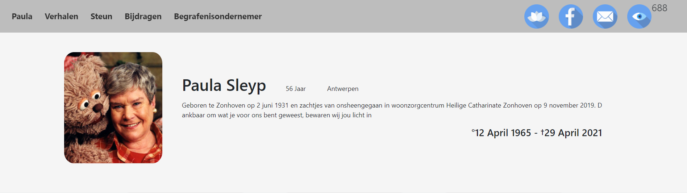

Reflectieverslag, week 15
17/01/2022 - 21/01/2022Deze week was ook een heel drukke week geweest. Aangezien het de laatste week was moest ik 12 uur per dag werken. Soms gebeurde dat ik 3 uur kon slapen omdat de dag daarvoor moest ik een conflict oplossen.
Conflicten tegen te komen en het op te lossen is een normale taak voor de developers, maar in de laatste week na 12 uur implementatie was het echt vervelend geweest (Ik moest voor 18 pagina's conflicten oplossen) en het duurde 5 uur.
Aan de andere kant was het ook leerzaam geweest en bij volgende conflict kon ik het gemakkelijker oplossen (het was een heel kleine stuk maar dit keer nier vervelend.)
Volgende taken heb ik gedaan:
- test van funcionaliteit
- verbetering de inplementatie van herdenkingsruimte
- leren conflicten op te lossen
- herdenkingsruimte responsief voor alle devices
- verbetering van modals van herdenkingsruimte
- nieuwe details in homepage toegevoegd en het weer verbeterd
- begrafenisondernemer pagina responsief
Maandag:
-
intervisiemonent 9-11
-
test van funcionaliteit
-
beginnen met verbetering van herdenkingsruimte
De structuur codes van herdenkingsruimte was alleen voldoende voor de web versie. Om het responsief kunnen te maken moest ik het met correcte structuur schrijven. Aan de andere kant was er alleen één .scss files voor meerdere .js files geschreven geworden en de classen hadden geen correcte volgorde en soms geen goede namen. Ik heb tijd genomen om eerst sections van elkaar apart te maken en een orde in de classes te geven dan voor elk .js file een aparte .scss file te maken daarna met verbetering van structuurs beginnen wat het ook veel tijd koste.
B.t.w. één .scss file voor verschillende .js file is prima als we bvb. een structuur voor knoppen of kaarten enzovoort willen hebben anders gaat het een drukke file worden.
Dinsdag:
-
verbetering van herdenkingsruimte afgemaakt
Het duurt zo lang omdat ik veel aanpassingen moest aanberengen.
Tijdens deployen krijg ik een conflict en kostte veel tijd om het op te lossen. 12 uur werk was voor niets, ik moet volgende dag weer op web versie van herdenkingsruimte werken. Pas daarna kan ik beginnen om het responsief te maken.
intro section
oude versie nieuwe versie Verhalen over Paula
oude versie nieuwe versie Schrijf een verhaal over Paula
oude versie nieuwe versie Eerbetoon aan Paula
oude versie nieuwe versie Paula rust hier in vrede
oude versie nieuwe versie
Woensdag:
-
oplossing van conflict
Herdenkingsruimte web versie weer correct gemaakt. Het was een lange werk (duurt 5 uur) en moest weer 18 files herbekijken en waar nodig editeren.
-
2de navbar van herdenkingsruimte verbeterd
oude versie 
nieuwe versie -
edit form van overledene (intro section) volgens design verbeterd
oude versie nieuwe versie -
edit form van bijdragen volgens design verbeterd
oude versie nieuwe versie -
edit form van begrafenisondernemer en begraafplaats volgens design verbeterd
oude versie nieuwe versie
Donderdag:
-
beginnen met herdenkingsruilte responsief te maken
Vrijdag:
-
herdenkingsruilte responsief gamaakt voor alle devices
-
heb geleerd hoe conflicten gemakkelijker op te lossen
-
homepage aangepast en nieuwe details toegevoegd
Op hero section heb ik "arrow naar rechts icon" veranderd met een "checkmark icon", plus een nieuwe lijn tekst.
hero section -
begrafenisondernemer pagina responsief gemaakt
-
modals op herdenkingsruimtes responsief gemaakt
-
tweede navbar mobile versie
Het heeft meer tijd nodig en lukte niet op het responsief te maken, maar heb de nodige codes gechreven en in comment gezet voor volgende collega's! 😊
Op aan de slag section heb ik de afbeelding boven creatie met een gif veranderd, plus nieuwe tekst onder afbeeldingen.

Op getuigenissen section heb ik nieuwe foto en review geplaats bij elk kaart, plus design van kaart zelf heb ik verbeterd.
Op over ons section heb ik de titel en de tekst veranderd.
Op contact section heb ik deel van de staff toegevoegd.
15 weken stage is nu met zijn leerrijke, moeilijke, stressvolle en aangename momenten afgelopen. Ik heb veel meegemaak, moeilijke tijden gehad en ervan niet alleen in front-end development maar ook karakteristisch opgegroid. Nu ben ik veel zelfstandiger en geduldiger geworden. Als we assume dat mijn kennis van front-end nu op 100 ligt, was het in de eerste week op bijna 0 geweest. Nu ben ik trots op mezelf.
Ik heb mijn stage succesvol beëindigd!